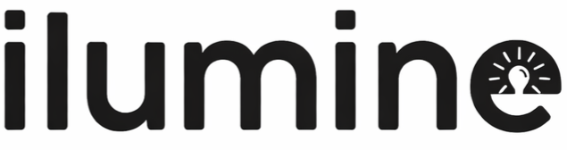

Clareza técnica
Informações essenciais de aplicação, tensão, potência, proteção e referências em leitura rápida.

Ilumine RepresentaçõesSobre
A Ilumine Representações conecta clientes a soluções eficientes para obras, comércios, vitrines, fachadas, eventos, decoração de Natal e aplicações profissionais.
Atuação
O site foi estruturado para apoiar validações comerciais com empresas, prefeituras, licitações, comércios, lojas, escritórios, decoradores, instaladores e projetos sazonais. A proposta é apresentar linhas de produto com linguagem objetiva, informações úteis e acesso rápido ao orçamento.
Cada família do catálogo traz aplicações, destaques e referências para facilitar a triagem inicial e direcionar o atendimento pelo WhatsApp com o produto certo já identificado.
Informações essenciais de aplicação, tensão, potência, proteção e referências em leitura rápida.
CTAs conectados ao WhatsApp para reduzir fricção entre interesse e orçamento.
Famílias de luminárias, fitas, neon e fontes para facilitar revisão visual e comercial com o cliente.
Próximo passo